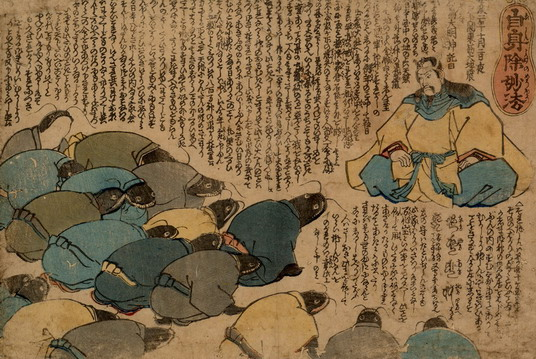

鹿島大明神に向かって、地震を起こしたことを詫びる鯰たち。皆、開いた口から歯を覗かせて、座って頭を下げ、着物を身にまとっている。
出典：親書誌：U426_nichibunken_0189：自身除妙法；ジシンヨケノミョウホウ／日付：2010／資源識別子：U426_nichibunken_0189_0001_0000
Copyright (c)2010- International Research Center for Japanese Studies, Kyoto, Japan. All rights reserved.